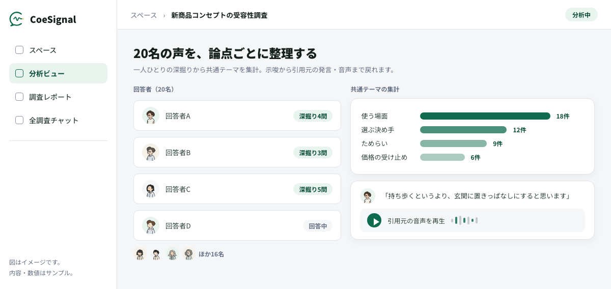
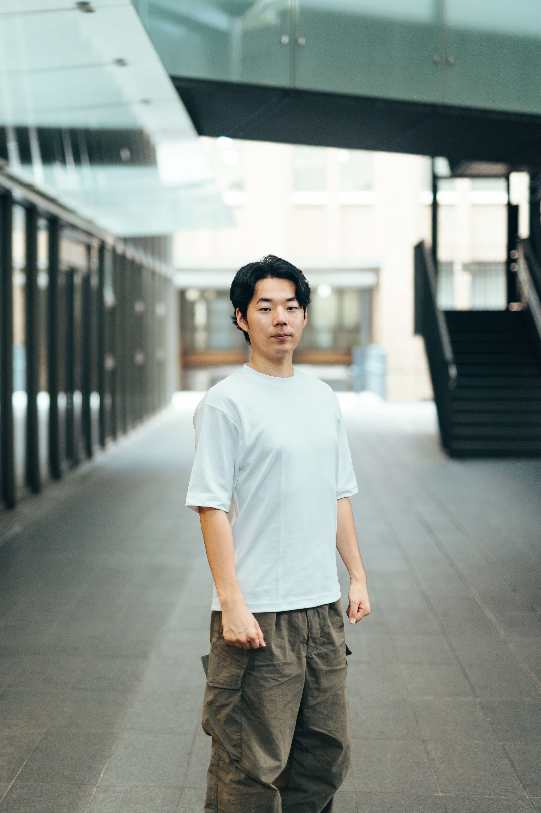

現場の声を、意思決定の証拠へ。AIインタビューサービス「CoeSignal」を正式ローンチ
AIが一人ひとりの声を深掘りし、反対意見や少数意見も含め、原発言まで遡れる意思決定用の報告をつくります。

株式会社TechWorker（本社：東京都新宿区、代表取締役 CEO兼CTO：古野光太朗）は、顧客や従業員へのヒアリングから、意思決定に使える報告までを支援するAIインタビューサービス「CoeSignal（コエシグナル）」の正式提供を開始しました。
CoeSignalは、AIが一人ひとりの回答をその場で深掘りし、集まった声を、反対意見や少数意見も含めて整理するサービスです。報告の結論だけでなく、同意された範囲で原発言まで遡れるため、「誰が、どのような文脈で話したのか」「反対意見はなかったのか」を確認しながら、商品・事業・組織の判断に活用できます。
ローンチの背景
企業の意思決定では、数字だけでは分からない理由や、現場で起きている事実を捉える必要があります。
一方で、アンケートでは選択の割合は分かっても、その背景にある理由までは見えにくいことがあります。人によるデプスインタビューは深く聞ける反面、日程調整や実施、文字起こし、分析に時間がかかり、少人数の声は会議で「一部の意見ではないか」と扱われることもあります。
また、生成AIによる要約が速くても、元の発言や反対材料を確認できなければ、重要な判断の根拠として使うことはできません。
TechWorkerは、企業の経営・事業支援に携わる中で、現場に重要な事実があるにもかかわらず、それが意思決定者まで届かない場面を繰り返し見てきました。そこで、声を集めるだけで終わらせず、会議で問い返されたときにも根拠を示せる形にするため、CoeSignalを開発しました。
CoeSignalの特長
AIが回答に応じて理由を深掘り
回答者は、専用URLから都合のよい時間に、音声またはテキストで回答できます。AIが回答内容に応じて追加質問を行い、表面的な回答だけでは分からない具体的な場面、理由、迷い、判断条件を確かめます。
日程調整を増やさず、一人ひとりにヒアリング
回答者ごとの面談日程を組むことなく、複数のヒアリングを並行して進められます。顧客、従業員、会員など、対象者の都合に合わせて声を集められます。
結論から原発言まで遡れる報告
集まった回答を、主要な発見、少数意見、反対意見、留意点とともに整理します。要約をブラックボックスにせず、同意された範囲で元の発言へ戻れる形にすることで、会議や稟議で検証できる報告をつくります。
AIだけで完結させず、人が品質を確認
自動生成された内容をそのまま納品するのではなく、担当者が回答や分析内容、除外理由などを確認します。調査設計から報告まで、意思決定の目的に合わせて支援します。
主な活用場面
- 新商品・新サービスのコンセプト評価
- 顧客満足度や解約理由の深掘り
- 広告、訴求メッセージ、ユーザー体験の改善
- 従業員の声を起点とした組織課題の把握
- AI導入や業務改革に向けた現場課題の整理
代表コメント

企業の支援をする中で何度も目にしてきたのは、現場には重要な事実があるのに、それが会議で使える証拠になっていないという状況でした。
CoeSignalは、単にインタビューを速くするためのサービスではありません。誰が、どのような文脈で話したのか。反対意見はなかったのか。どこまで確かなのか。そうした問いに答えられる形で声を残し、経営、商品、組織の次の一手につなげるためのサービスです。
現場の声が、意思決定の中心に置かれる状態をつくっていきます。
CoeSignal（コエシグナル）
提供：株式会社TechWorker
CoeSignal公式サイトを見る ／ お問い合わせ